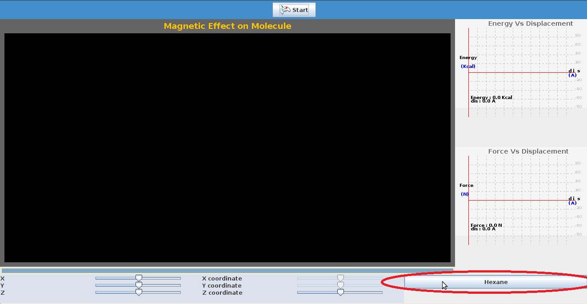
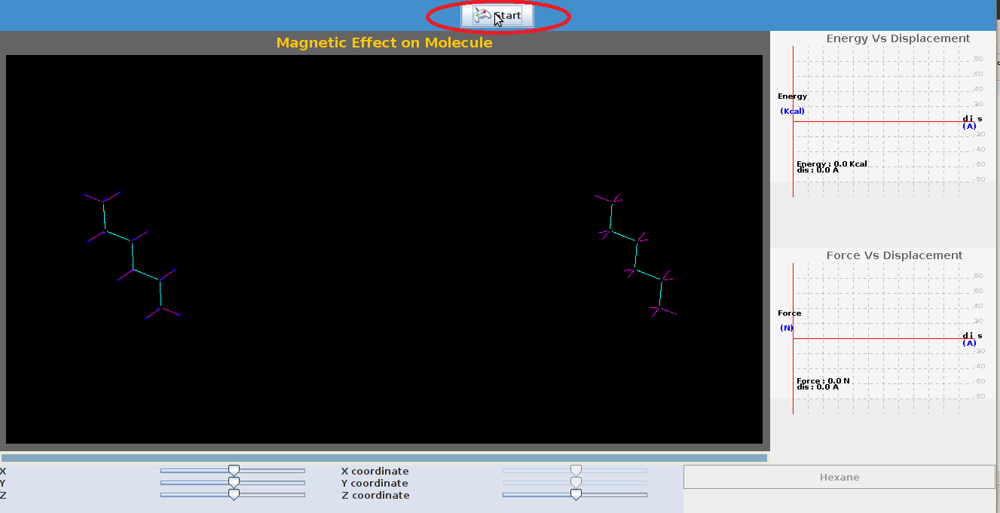
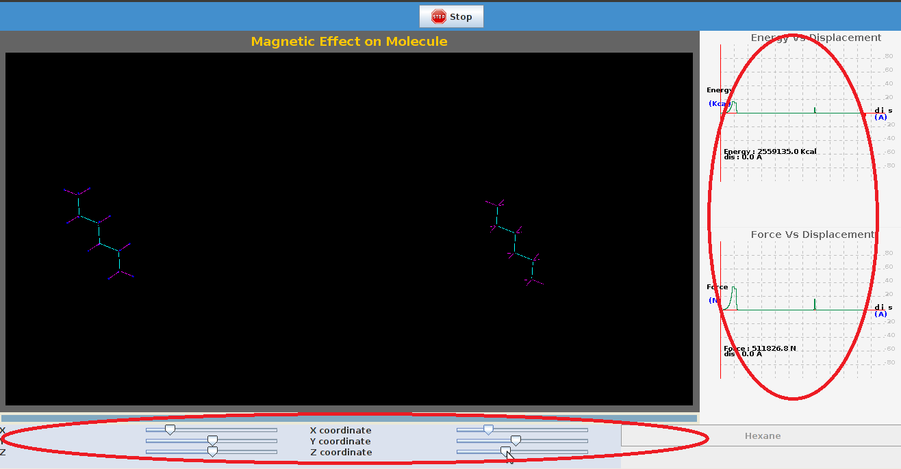

Van der Waals forces include attractions between atoms, molecules, and surfaces, as well as other intermolecular forces.
They differ from covalent and ionic bonding in that they are caused by correlations in the fluctuating polarizations of nearby particles.
The Lennard-Jones potential is often used as an approximate model for the isotropic part of a total (repulsion plus attraction) van der Waals force as a function of distance.The Lennard-Jones potential is a mathematically simple model that approximates the interaction between a pair of neutral atoms or molecules.
A form of the potential was first proposed in 1924 by John Lennard-Jones.

The Lennard--Jones potential is an effective potential that describes the interaction between two uncharged molecules or atoms. The Lennard--Jones potential is mildly attractive as two uncharged molecules or atoms approach one another from a distance, but strongly repulsive when they approach too close. The resulting potential is shown in figure below, at equilibrium the pair of atoms or molecules tend to go toward a separation corresponding to the minimum of the Lennard--Jones potential.
The Lennard Jones potential is common potential used to model VanderWaals interactions.
The strong close in repulsion between atoms or molecules is understandable, resulting from mutual deformation of their structures (meaning, one atom cannot diffuse through another) .
When two uncharged particles approach one another, the electron clouds of the competing particles undergo a deformation. During the interaction, each particle does not have a symmetrical electron cloud. As a result each acquires a dipole moment.
This is called an induced dipole moment. It lasts for only the short time of near approach, but during this time particles with dipoles are attracted to each other. This attraction is called the London or Van der Waals force.
The potential resulting from these attractive and repulsive interactions is called the Lennard--Jones potential,which is given by

|
σij - the collision diameter,at which inter particle potential is zero.
rij - the distance between the particles.
The parameters ε,σ is not given for a specific pair and can be found by using Lorentz-berthelot rules,
The term r-12is called repulsive term,observed at short ranges due to overlapping of electron orbitals.The term r-6describes the
attraction at long ranges.
The atoms can be treated as spheres defined by a Van der Waals radius that is a measure of how close another atoms can come before a strong,
very short range, repulsive force kicks in.
Van der Waals surface area , also van der Waals surface or van der Waals envelope is the imaginary surface of the union of spherical atom surfaces defined by , the so-called van der Waals radius of each atom in the molecule representation. The van der Waals surface enclosed volume reference is molecular volume. Both van der Waals surface and molecular volume are abstract representation of molecules, rather than "real" surfaces and volumes of molecules.

To study Van der Waals interactions between molecules.


There are certain parameters to be initialized and the procedure detailed here can be followed.
| STEP1:Select the type of molecule by clicking on it. |
|  |
| Step2: Click 'Start' to start the experiment. |
|  |
| Step 3: The coordinates of molecule can be varied by varying the sliders,a plot of energy,force by varying positions is seen. |
|  |


- P.W Atkins "Physical chemistry"
- Intermolecular forces by Jacob N.Israelachvili
- Principles and Practice of Chromatography by Raymond P. W. Scott,
- http://www.wellesley.edu/Chemistry/chem211lab/Orgo_Lab_Manual/Appendix/Techniques/TLC/thin_layer_chrom.html
- http://ww2.chemistry.gatech.edu/~lw26/structure/molecular_interactions/mol_int.html#B
- http://www.studyhplc.com/thechromatographicprinciple.php
- http://www.chemguide.co.uk/analysis/chromatography/column.html
- http://en.wikipedia.org/wiki/Column_chromatography